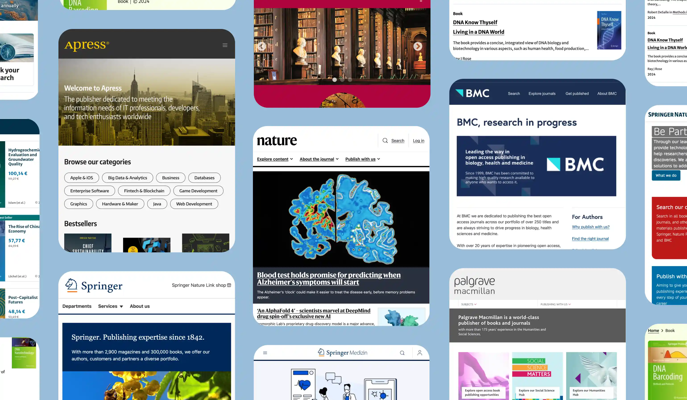
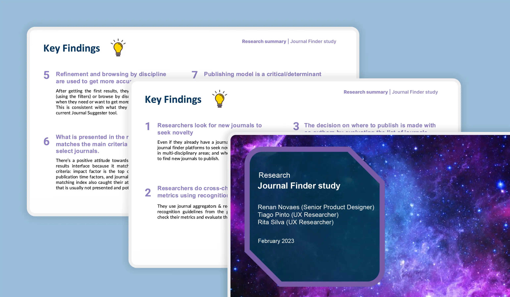
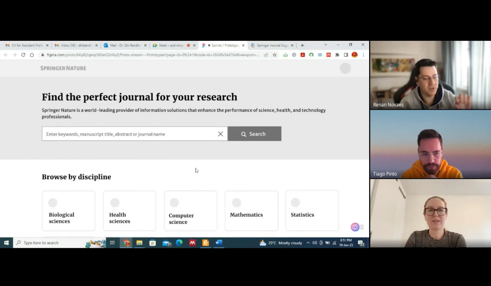
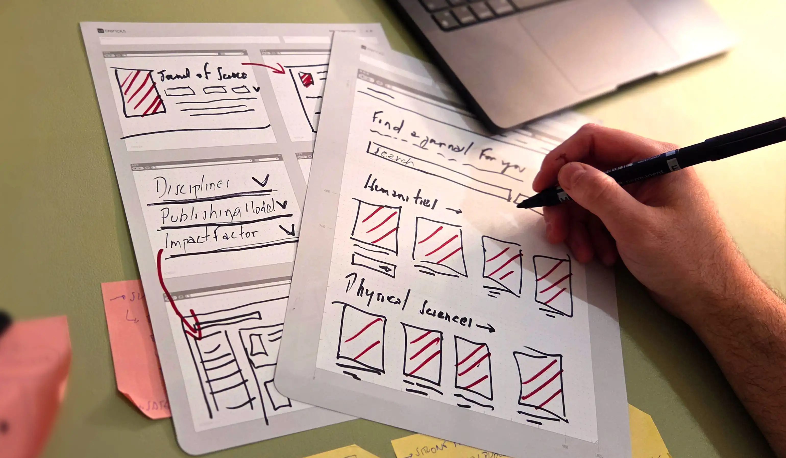
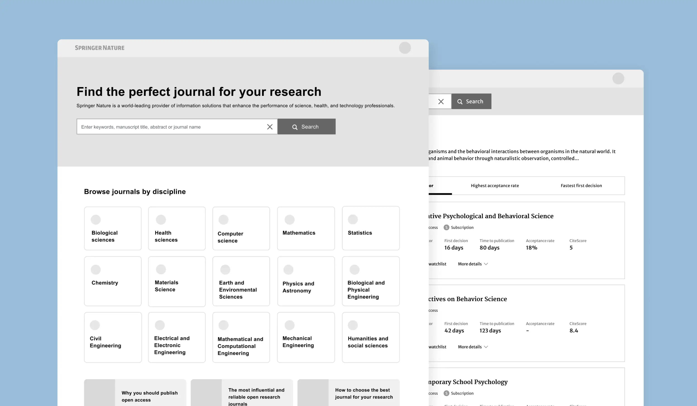
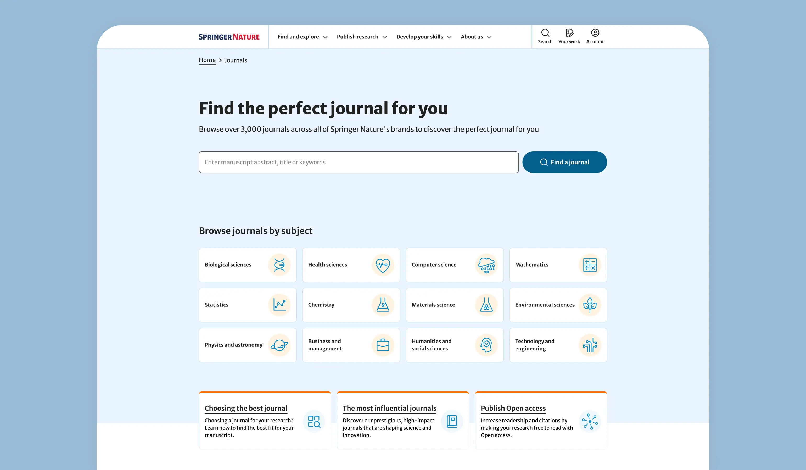
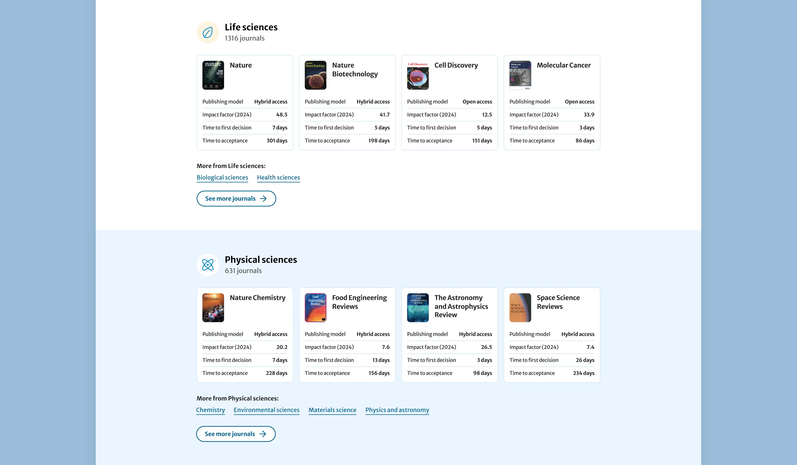
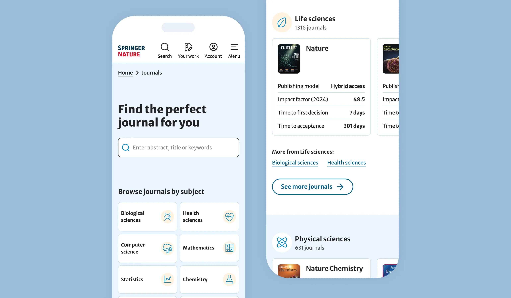
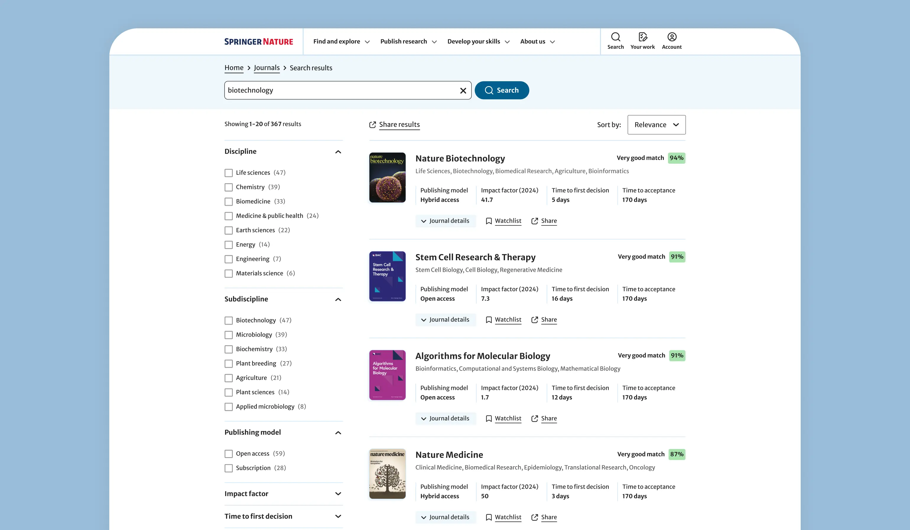
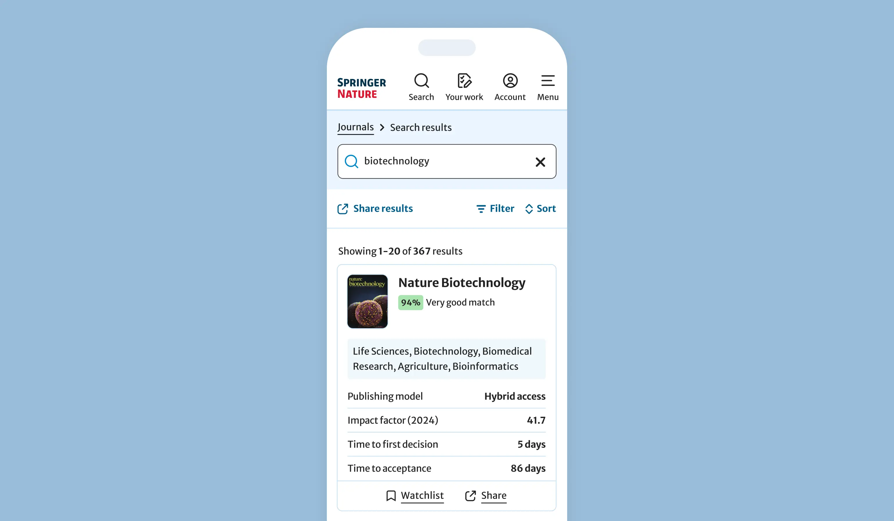

Executive summary
The company
Springer Nature is one of the world's largest publishers of scientific articles and books, publishing around 500k articles and 13k books annually. With 3k+ journals, the company leverages platforms that help researchers uncover new ideas and share discoveries with the world.
My role
As the Senior Product Designer, I led the product's design strategy from discovery to delivery. I partnered with a cross-functional team to build a journal discovery platform, reducing turnaround times and improving acceptance rates.
The problem
A fragmented ecosystem made it difficult for researchers to find the right journal for their work. This lack of a centralized way to browse the company's portfolio of journals led to scope mismatches, submission delays, and users churning to competitors.
Impact
- ↑ 50.7% increase in submission funnel completion rate
- ↑ 35.7% new user acquisition rate via organic search
- ↑ 8.6% session-to-submission conversion rate
---
The context: a fragmented legacy
Springer Nature was established through the merger of important academic publishers, including Nature, Springer, BioMedCentral, Apress, and Macmillan. While the merger created a massive library of information, it also inherited a fragmented digital ecosystem. Researchers were forced to navigate a disjointed experience—managing multiple accounts and different interfaces to access information across siloed websites.
In response to these issues, Springer Nature established a strategy to build a single, brand-agnostic platform, transforming a collection of legacy websites into the reading platform of choice for hundreds of thousands of researchers worldwide.

---
The problem: A high cost of discovery
A critical phase of the researcher's journey is identifying the most suitable journal for their research. This is a gateway decision: choosing the wrong journal can result in significant submission delays and higher risk of rejection.
The lack of a centralized, searchable portfolio of the company's 3,000+ journals created a significant barrier. Without a unified way to browse the catalog, several critical issues emerged:
- Scope Mismatch: A high volume of articles were rejected simply because they did not align with a specific journal's scope, leading to researchers' frustration.
- Delayed Submissions: Submitting to the wrong journal often caused delays of several days in the submission process.
- Funding Risks: For many authors, delays aren't just an inconvenience—they lead to a loss of funding, forcing researchers to pay publication fees out of pocket.
- User Churn: When a journal rejects an article due to scope mismatch, researchers frequently "churn" out of the Springer Nature ecosystem and publish with a competitor.
- Increased Workload: The internal editorial teams faced a massive backlog of "out-of-scope" submissions, creating a heavy operational burden.
- Brand Weakening: The inability to see the full breadth of the portfolio prevented researchers from perceiving Springer Nature as a leader in academic publishing and as the first option when looking to publish their work.
---
My approach
As the Senior Product Designer, I led the design strategy and execution from discovery to delivery. My responsibility was to ensure we designed a best-in-class product that helps researchers find the best home for their research. I focused on making the journal discovery easy and effective, helping to reduce turnaround times and improving acceptance rates.
I worked in a cross-functional team alongside a Product Manager, a Business Analyst, and a UX Researcher. Together, we analyzed customer behavior and identified how product friction was hurting the business. My role was to turn these insights into effective design solutions.
As a Senior Product Designer, I took the following actions:
- Synthesized data from multiple sources, analyzing user feedback and product data to find the biggest pain points in the journey. This helped us understand where the most critical issues and opportunities were.
- Defined success metrics by collaborating closely with the Product team to set project goals and establish clear ways to measure our success.
- Partnered with SEO and Marketing teams to ensure the product served as an effective channel for attracting new users. I focused on making the journal portfolio highly visible on search engines like Google, helping to increase the number of researchers discovering Springer Nature.
- Conducted user research, interviewing researchers to learn what factors—such as speed, prestige, topic, or publication fees—matter most when they are choosing a journal.
- Performed competitive benchmarking by analyzing other publishing platforms to identify industry trends, helping me understand how competitors approached similar discovery problems and ensuring our solution was modern and effective.
- Led iterative usability testing, running tests to refine user flows and ensuring that every part of the experience felt consistent and worked seamlessly together.
- Designed a scalable information architecture to organize over 3,000 journals, creating a navigation and filtering system that allowed researchers to browse by attributes that supported their decision-making.
- Advocated for accessibility, ensuring all designs adhered to Springer's commitment to WCAG AA standards so that web content remained accessible to people with diverse disabilities.
- Worked closely with engineers during the implementation phase, providing detailed documentation and collaborating with the dev team to ensure the final product met our high-quality standards.




---
The solution
Our primary goal was to design a centralized and intuitive journal discovery experience. We aimed to empower researchers to navigate Springer Nature's extensive portfolio of over 3,000 journals with confidence, ensuring they could efficiently find the perfect home for their research.
Beyond improving the core discovery experience, we partnered with the SEO team to identify an opportunity to index approximately 3,500 targeted landing pages — each tailored to specific subject areas and structured to rank highly on Google, creating a scalable new channel for organic user acquisition.
To ensure the platform's success, the final design was built upon the following core principles:
- A Unified Ecosystem: Replacing a disjointed network of legacy websites with a single, brand-agnostic destination for all Springer Nature journal discovery.
- Smart Taxonomy & Filtering: Allowing users to easily filter 3,000+ journals based on attributes that matter most, such as scope, impact factor, acceptance rates, turnaround times, and publishing model.
- SEO-Driven Architecture: Identifying an opportunity to index approximately 3,500 targeted landing pages, structured to capture long-tail organic search traffic and attract researchers at the moment of journal discovery.
- Clear Conversion Paths: Providing researchers with direct, frictionless routes from discovering a journal to initiating the submission process.
- Intelligent Search: Extensively testing and refining the search engine to ensure it consistently surfaces the most relevant results for researchers across different scientific subjects.
- Accessible by Design: Ensuring the entire platform adheres to WCAG 2.1/2.2 Level AA accessibility standards, making it accessible to everyone.





---
Impact
The solution proved highly effective in helping researchers confidently choose the right journal for their work, with engagement and conversion metrics validating the product's impact at launch.
Beyond the core discovery experience, early data also signalled strong organic acquisition potential — with over 1 million sessions per month and 35.7% of organic visitors being first-time users.
---
Metrics
- 8.6% Session-to-submission conversion rate
- 25% Search results engagement rate (sessions with at least one journal click)
- ↑ 50.7% increase in submission funnel completion rate
- 35.7% _New user_ acquisition rate via organic search
---
Footnotes
1. The share of website sessions that led to a researcher initiating a manuscript submission — the platform's primary conversion event, equivalent to a purchase in e-commerce.
2. The increase in the share of users who started and successfully completed the end-to-end submission flow — from opening the submission system to clicking "Submit manuscript."
3. The share of organic search visitors who had never previously accessed the platform, indicating the website's effectiveness as a new user acquisition channel.